Pytorch Core Code Research
Pytorch Release Version Composition
The repository cloned from GitHub pytorch/pytorch is different from the package we download using pip install or conda install. In fact, the former contains many C/C++ based files, which consist of the basic of Pytorch, while the latter is more concise and contains compiled libraries and dll files instead.
Here, let’s discuss the release version, or the installed package at first. The package has a lot of components, Here I only pick out some most important parts to do explanation.
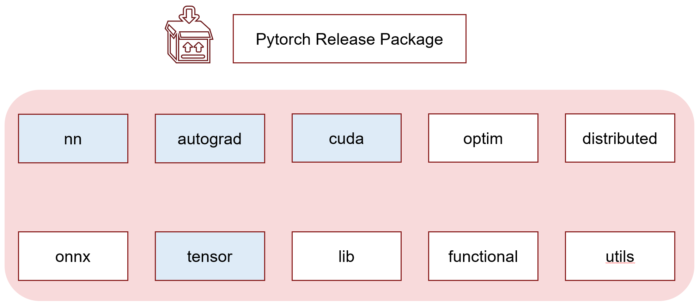
nn
All deep learning layers’ python entrance are located here. They mainly collect parameters from init input and do some modification to the input data. After that it will send core computation operation together with parameters into torch._C based functions.
autograd
Contains a series of base functions which serves for back propagation. Also, if you dig in, the core implementation is still from C libraries. Variable wrap is also put here, but now it is just omitted because of the merge of tensor and Variable.
CUDA
Mainly these parts are contained in cuda folder: Stream, Event, Broadcast and Random.
- A CUDA stream is a linear sequence of execution that belongs to a specific device, independent from other streams.
- CUDA events are synchronization markers that can be used to monitor the device’s progress, to accurately measure timing, and to synchronize CUDA streams.
- Broadcast related functions mainly do the jobs to make sure operations run on different GPUs and gather correctly.
optim
torch.optim is a package implementing various optimization algorithms. Most commonly used methods are already supported, like adam, sgd and adagrad.
distributed
The distributions package contains parameterizable probability distributions and sampling functions. This allows the construction of stochastic computation graphs and stochastic gradient estimators for optimization.
onnx
The torch.onnx module contains functions to export models into the ONNX IR format. These models can be loaded with the ONNX library and then converted to models which run on other deep learning frameworks.
tensor
Most basic tensor class defined here. It inherit a super class from C lib, called torch._C._TensorBase . And it attaches a lot of method like register_hook,resize, norm to tensor class. All these method eventually call C based libraries.
lib
The library where compiled C/C++ files located. There are .dll files as well as .lib files. According to the bug reports on google, I believe .dll files are specially compiled for the compatibility of windows and .lib can be used in linux and some of them are also usable in Windows.(If you find a more accurate explanation, please tell me:) These files included: _C.lib, c10.lib, torch.lib, c10_cuda.lib.
functional
Functions related to tensor operation are all located here. In fact, again, they are wrappers of functions from C libraries. You can find functions like tensordot, unique, split in this file.
utils
All kinds of utilities codes are located here. This include dataset related code dataloader.py, dataset.py, sampler.py, also include save and output related checkpoint.py. Some TensorBoard support can also be found here.
How Pytorch manage its inner resource
What is Tensor
In mathematics, a tensor is an algebraic object that describes a linear mapping from one set of algebraic objects to another. Objects that tensors may map between include, but are not limited to, vectors and scalars, and, recursively, even other tensors. The tensor is the central data structure in PyTorch. It’s an n-dimensional data structure containing some sort of scalar type, e.g., floats, ints, et cetera. We can think of a tensor as consisting of some data, and then some metadata describing the size of the tensor, the type of the elements in contains (dtype), what device the tensor lives on (CPU memory, CUDA memory)

How Tensor organizes
TH library is responsible for the computation,storage and memory management of Tensor. It divide the “Tensor” into two separate parts: Storage and Access/View.
Storage: THStorage. It manage the way of storing the Tensor.
Access: THTensor. It provide a access to user.
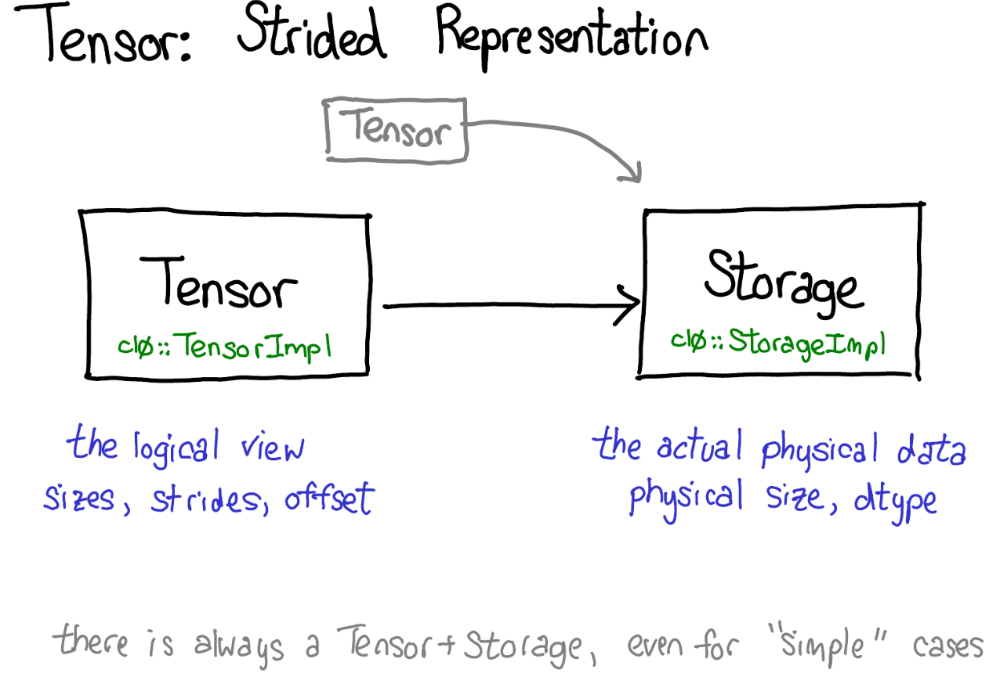
Data Storage
1 | typedef struct THStorage |
- All of the “Tensor” in CPU is in fact a C pointer pointing to a data structure in memory like this. And it use reference count to do memory management.
- refcount: Here we apply reference count method to do automatic garbage collection. When the reference number becomes 0, this struct will be freed automatically.
Data Access
1 | typedef struct THTensor |
- nDimension: The number of dimensions
- size: It contains the length information of all dimensions.
- refcount: Reference count
- storage: Pointer of this data structure
- stride: The size of each dimension.
Memory Allocator
/c10/core/Allocator.h
1 |
|
The allocate function is directly included from head file memory.
/aten/src/TH/THAllocator.cpp
1 | at::DataPtr THMapAllocator::makeDataPtr(const char *filename, int flags, size_t size, size_t* actual_size_out) { |
Default allocator is malloc/free allocator. malloc and realloc raise an error (using THError) on allocation failure.
Understand Parameters
It is hard and not straightforward enough to understand stride and storage offset, so let’s borrow some images from ezyang, who is supposed to be an inner developer of Pytorch, to elaborate this problem.
A tensor is a mathematical concept. But to represent it on our computers, we have to define some sort of physical representation for them. The most common representation is to lay out each element of the tensor contiguously in memory (that’s where the term contiguous comes from), writing out each row to memory.
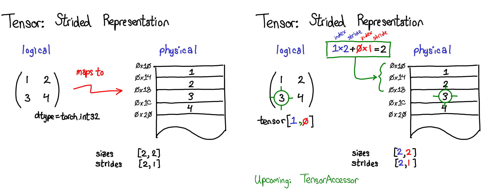
Please notice the relationship of sizes and strides. If we get a tensor with a size of (D,H,W) and this tensor is directly defined by user rather than a slice or result of some operation, the stride of it will be (H*W, W, 1). You can compare and draw a conclusion yourself. Each stride element in a certain dimension will be the product of all the following dimensions, and the stride of the last dimension will be 1.
Physically, stride means how many blocks of memory computer need to skip to get to the starting position of the next corresponding dimension. And if we use a formula to compute the memory position of a , it will be .
In the example image above, I’ve specified that the tensor contains 32-bit integers, so you can see that each integer lies in a physical address, each offset four bytes from each other. To remember what the actual dimensions of the tensor are, we have to also record what the sizes are as extra metadata.
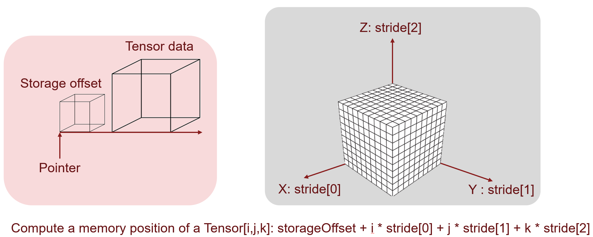
Then comes to the memory offset. What does this mean? As we has mentioned before, a tensor storage may support multiple tensor view, and if we sliced the first N elements, then we will start from N+1 memory position. The following examples will give a further explanation.
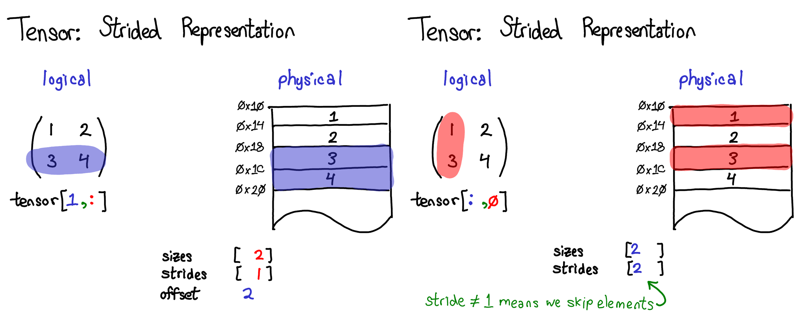
You can see in the left example, we start at the third element block, so that means we skip two block, and here the offset is 2. Because of the slice, the two dimensional tensor becomes one dimensional tensor, and conjoint elements are continuous in physical storage, this means the strides is [1]. Size is the number of elements in this case and it is 2.
In the right example, conjoint elements are not continuous, but it do start from the beginning, so the strides is [2] and offset is 0. There are still two elements in total so the sizes don’t change.
What’s more, if you still find it somehow difficult to understand, you may try this website to playing with these parameters and see the dynamic process.
Tensor implementation dispatch
As we know, although in Python, you can use any type of data as you wish, as the interpreter will take care of the rest of the things. However, since the basic kernels are written in C/C++, functions from Python need to be dispatched into same functions with different input and device type. To a C/C++ functions, a certain function cannot take in int and float Tensor as a same X at the same time, they need separate implementation.
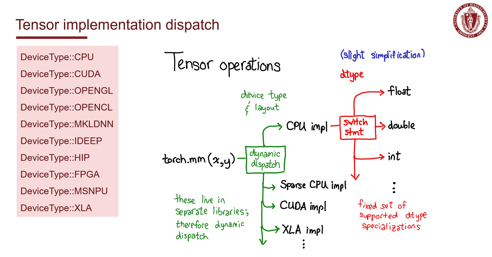
How to dispatch
As we discussed above, the basic C/C++ implementation need to dispatch according to data and device type. But in code, how to actually do this work?
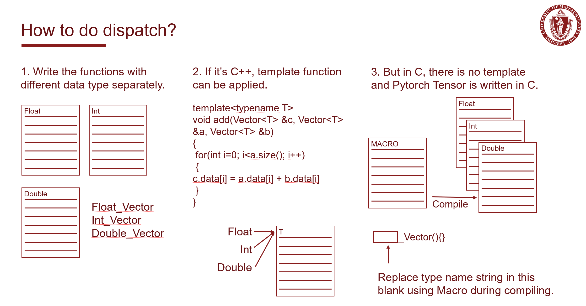
There are basically three methods.
- Write these functions with different data and device type separately, and manually.
- Using template function to build those dispatched function in the compiling time. But this only works in C++, while many code in Pytorch is still written in C.
- Apply the magic item – Macro. By defining the function name as a Macro which takes in one or some parameters, like the data type name, we can compile this function in different types by
#defineand#undefmultiple times, setting the variables in function name macro into various type name to compile the function into many copies which support different types.
Here’s a simplified example:
File structure:
1 | . |
add.h
1 | // add.h |
add.c
1 | // add.c |
generic/add.h
1 | // generic/add.h |
generic/add.c
1 | // generic/add.c |
An Example finding THStorage
I try to find the definition of THStorage, since it will give us a brief understand of the file management structure of pytorch, and we can also grab a basic idea of how those macros and includes are forming this huge project. We start from torch/csrc/Storage.cpp, and check step by step to the file included.
1 | Storage.cpp -> |
Find the macro definition in TH/generic/THStorage.h:
1 |
Find the structure definition in c10/core/StorageImpl.h:
1 | namespace c10 { |
Therefore, the hidding real tpye of THWStorage is at::StorageImpl, and it is the implementation of data storage. Let’s look into the definition of THPStorage_(pynew) at first, when the value of cdata is not provided, it need to create an implementation of class THWStorage using function THWStorage_(NAME), and the value of NAME can possibly be:
1 | new // New a THStorage, if size not specified, size=0, that means using default Allocator |
And also some macro definitions:
1 |
The declaration of function THStorage_(NAME) lives in TH/generic/THStorage.h, TH/generic/THStorageCopy.h and the implementation part lies in corresponding cpp files.
(BTW, if using cuda, the declaration of #define THWStorage_(NAME) THCStorage_(NAME)lie in THC/generic/THCStorage.h and THC/generic/THCStorageCopy.h)
Take THStorage_(newWithSize) function as an example, look into TH/generic/THStorage.cpp and we can find the definition:
1 | THStorage* THStorage_(newWithSize)(ptrdiff_t size) |
It’s not hard to infer from this code block that it new an StorageImpl, and add an intrusive pointer pointing to one of them, at last return a pointer pointing to StorageImpl and destroy the intrusive pointer. Macro THStorage is at::StorageImpl, so this method simply new a StorageImpl and return a pointer pointing to it. According to the definition of c10::make_instrusive`, this work will actually be done by the constructor of StorageImpl’ and it is:
1 | StorageImpl( |
We will only traced here and this show a representative example of how pytorch inner code call and implement those method.
Autograd
Autograd is a method which support automatic computation of gradient which will be used in the back propagation. Autograd depend directly on the computational graph. Computational graph is used for defining the pipeline of a model. It combines functions with variables and shows how they connect to each other.
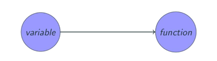
A directed graph with the following property:
- Edge: a function, or a function’s dependency
- Points with input edges: a function (or operator)
- Points with output edges: a variable
Computational graph has two major types, they are dynamic and static computational graphs. TensorFlow applies static graph, it has the following characteristics:
- First define the structure of the graph, and then assign values to the leaf nodes (this is the origin of placeholder)
- Then forward according to the assignment of leaf nodes
Pytorch, on the other hand, utilize dynamic graph. The structure of the graph is established at the same time as the forward, so there is no need to use placeholder.
Here is an example inner code of autograd.
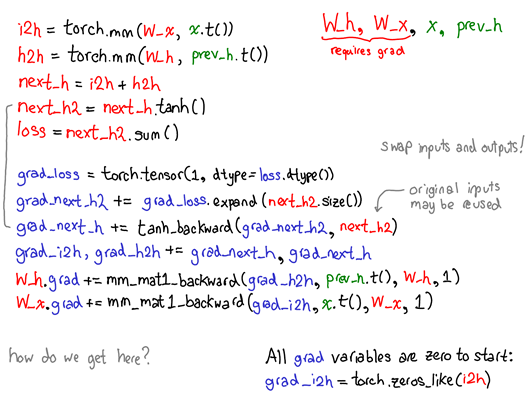
Here we will elaborate these parameters which get involved in this process.
-
Data: It’s the data a variable is holding.
-
requires_grad: This member, if true starts tracking all the operation history and forms a backward graph for gradient calculation.
-
grad: grad holds the value of gradient. If requires_grad is False it will hold a None value. Even if requires_grad is True, it will hold a None value unless .backward() function is called from some other node.
-
grad_fn: This is the backward function used to calculate the gradient.
-
is_leaf: A node is leaf if :
-
It was initialized explicitly by some function like x = torch.tensor(1.0) or x = torch.randn(1, 1) (basically all the tensor initializing methods discussed at the beginning of this post).
-
It is created after operations on tensors which all have requires_grad = False.
-
It is created by calling .detach() method on some tensor.
-
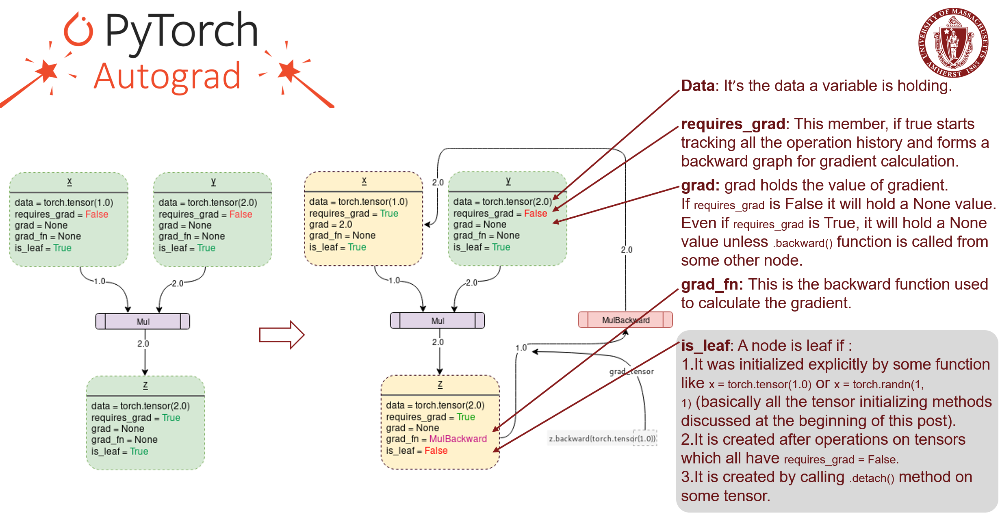
Pytorch Source Code Composition
Since different data type, different devices are supported, and python code call C/C++ based code, the source code structure is not easy to understand. Here is the most important parts in the root directory.
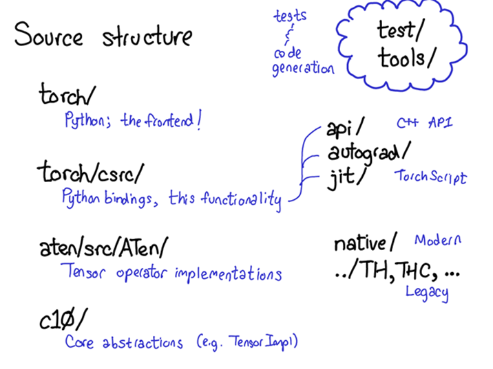
And provide a more detailed directory comment as well as explanation below.
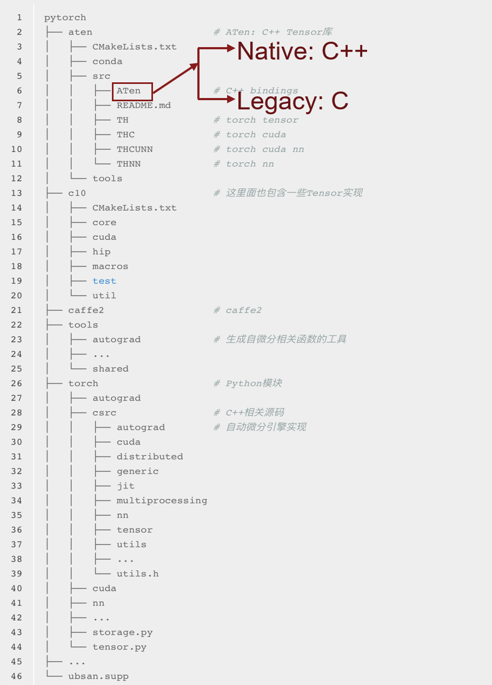
Explanation of crucial folders
C10
Caffe Tensor Library: Most basic tensor library. Codes here can be deployed to mobile devices as well as servers. It contains the core abstractions of PyTorch, including the actual implementations of the Tensor and Storage data structures.
ATen
A TENsor library for C11, the C tensor library for Pytorch. It is a C++ library that implements the operations of Tensors. If you’re looking for where some kernel code lives, chances are it’s in ATen. ATen itself bifurcates into two neighborhoods of operators: the “native” operators, which are modern, C++ implementations of operators, and the “legacy” operators (TH, THC, THNN, THCUNN), which are legacy, C implementations. The legacy operators are the bad part of town; try not to spend too much time there if you can.
Caffe2
This part is from the original Caffe2. After the merge of Pytorch and Caffe2, Caffe2 become a kind of backend in Pytorch.
Torch
This is the part normally called by user when then use Pytorch to train or test their models. It contains what you are most familiar with: the actual Python modules that you import and use.
Torch/csrc
The C++ code that implements what you might call the frontend of PyTorch. In more descriptive terms, it implements the binding code that translates between the Python and C++ universe, and also some pretty important pieces of PyTorch, like the autograd engine and the JIT compiler. It also contains the C++ frontend code.
Mechanism inside a simple call
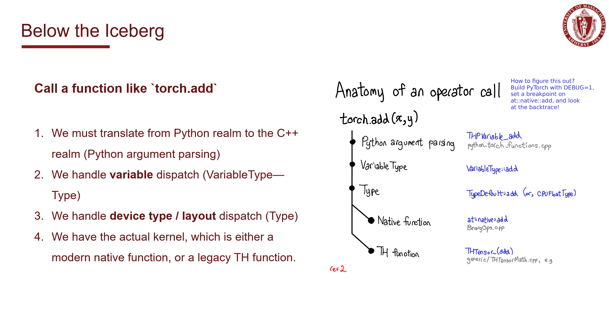
Basic Condition of Memory Management in Pytorch
- Every tensor will be assigned with a allocator when it is initialized.
c10/core/Allocator.h: Pytorch default allocator class defined here.
Some Policy in c10/core/Allocator.h:
-
A DataPtr is a unique pointer (with an attached deleter and some context for the deleter) to some memory, which also records what device is for its data. nullptr DataPtrs can still have a nontrivial device; this allows us to treat zero-size allocations uniformly with non-zero allocations.
-
Choice of CPU here is arbitrary; if there’s an “undefined” device, we could use that too.
-
The deleter can be changed while running using function
compare_exchange_deleter. -
This context is used to generate DataPtr which have arbitrary
std::functiondeleters associated with them. In some user facing functions, we give a (user-friendly) interface for constructing tensors from external data which take an arbitrarystd::functiondeleter. Grep for InefficientStdFunctionContext to find these occurrences.This context is inefficient because we have to do a dynamic allocation
InefficientStdFunctionContext, on top of the dynamic allocation which is implied bystd::functionitself.
- There is a fake allocator in Aten(
aten/src/ATen/CPUFixedAllocator.h), which just throws exceptions if some cpu fixed operation is actually used, likecpu_fixed_malloc,cpu_fixed_realloc,cpu_fixed_free. c10/core/CPUAllocator.cppcontains functions:alloc_cpu,free_cpu,memset_junk,alloc_cpueven has the code dealing with NUMA machine. And there is a classMemoryAllocationReporterwhich is used to report C10’s memory allocation and deallocation status.c10/core/Allocator.cpp: Set and get allocator for different device type.
1 | DeviceType::CPU |
-
c10/core/StorageImpl.h&c10/core/Storage.h: Mainly allocates memory buffer using given allocator and creates a storage with it. Mark. -
c10/cuda/CUDACachingAllocator.cppis a caching allocator for CUDA. It has the following description:
1 | Yet another caching allocator for CUDA device allocations. |
How Python interact with C/C++
Compile C program to .so library and call it in python
Compile as shared library
- Finish writing your C code.
- Compile it into a
*.sofile. - Import
ctypesin python file. - Load
*.sofile inside a python file. - *Define the input type of a C function.
- Call function inside the
*.sofile.
function.c
1 | int myFunction(int num) |
Compile
1 | gcc -fPIC -shared -o libfun.so function.c |
1 | import ctypes |
Add wrapper in C++ file
If this is a C++ file, you need to expose the function you want to use in a extern "C" wrapper.
1 |
|
And then compile:
1 | g++ -c -fPIC foo.cpp -o foo.o |
Afterwards, thing in Python code are similar as those in C.
1 | from ctypes import cdll |
C++ file include module and Expose
Include <boost/python.hpp> the function in BOOST_PYTHON_MODULE
A C++ Function can be exposed to Python by writing a Boost.Python wrapper:
1 |
|
That’s it. We’re done. We can now build this as a shared library. The resulting DLL is now visible to Python. Here’s a sample Python session:
1 | import hello_ext |
Integrating a C++/CUDA Operation with PyTorch
When we want to build a customized method or module, we can choose whether to build it in python or C++. The former is easier but the C++ version is faster and more efficient, especially when we want to build a frequently used or time consuming module. Here comes the explanation.
CPU Integration
Besides integrate C++ file in python and use it in Pytorch, Pytorch itself provides us with two quite straightforward way to finish this job. They are Building with setuptools and JIT Compiling Extensions.
For the “ahead of time” flavor, we build our C++ extension by writing a setup.py script that uses setuptools to compile our C++ code. For the LLTM, it looks as simple as this:
1 | from setuptools import setup, Extension |
The JIT compilation mechanism provides you with a way of compiling and loading your extensions on the fly by calling a simple function in PyTorch’s API called torch.utils.cpp_extension.load(). For the LLTM, this would look as simple as this:
1 | from torch.utils.cpp_extension import load |
CUDA Integration
Integration of our CUDA-enabled op with PyTorch is again very straightforward. If you want to write a setup.py script, it could look like this:
1 | from setuptools import setup |
Instead of CppExtension(), we now use CUDAExtension(). We can just specify the .cu file along with the .cpp files – the library takes care of all the hassle this entails for you. The JIT mechanism is even simpler:
1 | from torch.utils.cpp_extension import load |
Conclusion
- Pytorch’s python part doesn’t have special care on memory management, means it just works in the way standard python programs work.
- Current Pytorch source codes contains codes from multiple source, some of them are pure legacy, some come from caffe2, some serves as basic code, some are packed into dlls to serve python. Also, codes are different for those in CPU and CUDA, we need to focus on the right part if any optimization want to be made.
- Almost all Pytorch core modules and functions are implemented in C++ based code and that will be much more efficient.
- Every tensor is attached with a memory allocator, which can not only do the work of allocate and free, but also record the device on which it is located. Different kinds of allocator for different data type can be delivered as input parameter, this makes the code more compatible.
- Pytorch combines multiple code dispatch method and they work well for C and C++ code.
- Python can call compiled C file using ctypes, but Pytorch provides a toolset which makes it even easier.
Reference
Slides


Zhongyang Zhang